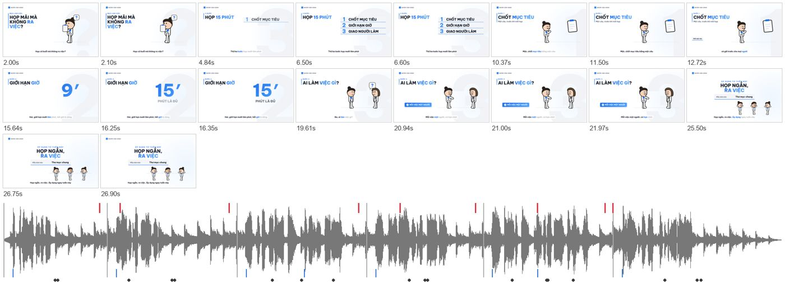

Hai skill đọc tài liệu của bạn, viết kịch bản, tạo giọng đọc tiếng Việt, phụ đề karaoke khớp từng từ, nhạc nền, dựng hình hoạt hình theo màu thương hiệu, tự soát lỗi rồi xuất video đạt chuẩn đăng mạng xã hội. Không dùng AI tạo video, không cần khoá API.
Hai skill dùng chung cách làm, chung sáu kiểu cảnh và chung bộ kiểm. Khác nhau ở khổ hình và bố cục. Cùng một kịch bản có thể dựng ra cả hai khổ.
Tiêu đề trên, hình giữa, phụ đề phía trên vùng nút của ứng dụng. Tự chừa vùng an toàn cho TikTok và Reels.
Chữ ở cột trái, hình minh hoạ ở khối bên phải, phụ đề dưới giữa khung. Nhịp chậm hơn, hợp nội dung dài.
Tải repo về, chạy script cài đặt, script chép hai skill vào thư mục skill của Claude Code và báo phần mềm nào còn thiếu.
Không dùng git thì bấm “Tải file ZIP”, giải nén rồi chép hai thư mục trong skills/ vào ~/.claude/skills/.
gTTS và openai-whisper không bắt buộc. Thiếu gTTS thì dùng giọng macOS. Thiếu whisper thì căn lời theo năng lượng, kém chính xác hơn một chút.
| Thành phần | Bắt buộc | Dùng để |
|---|---|---|
| Claude Code | có | chạy skill, viết kịch bản, điều phối các bước |
| Node.js 18+ | có | chạy HyperFrames qua npx để render, tự tải Chrome headless lần đầu |
| ffmpeg, ffprobe | có | xử lý âm thanh, ghép video, đo độ lớn tiếng |
| Python 3.9+ với numpy, Pillow, playwright | có | tạo nhạc, mix, tự soát khung hình |
| gTTS | nên có | giọng đọc tiếng Việt miễn phí, cần mạng |
| openai-whisper, model base | nên có | căn lời theo từng từ cho phụ đề karaoke |
Bạn chỉ làm ở bước 1, 2 và 6. Claude làm phần còn lại và chỉ giao video khi mọi chỉ số đều đạt.
Đặt file vào thư mục làm việc và gõ yêu cầu, ví dụ “Làm video dọc 45 giây minh hoạ quy-trinh-hoan-tien.md cho nhân viên mới”. Tài liệu có thể là markdown, PDF, Word đã lưu thành văn bản, hoặc nội dung dán thẳng.
Video để làm gì, ai xem, đăng ở đâu, xem xong người xem nên làm gì. Claude đề xuất thông điệp chính, số cảnh, độ dài và lời mời cuối, rồi chờ bạn đồng ý.
Tạo thư mục dự án từ template, áp màu, phông và logo nếu bạn có. Không có thì dùng màu trung tính có sẵn.
Viết script.json với các cảnh và dòng lời, rồi chạy bộ kiểm độ dài chữ, neo và thời lượng ước tính trước khi tốn thời gian tạo giọng.
Tạo giọng, căn lời, nhạc và âm thanh nhấn, dựng hình, tự soát khung hình, render, xuất phụ đề và chạy cổng nghiệm thu. Video 30 giây mất vài phút, phần lớn cho bước tạo giọng và render.
Xem video và tấm ghép khung hình. Muốn sửa câu chữ, màu hay độ dài thì nói thẳng, Claude chạy lại đúng bước cần thiết.
Mọi video ghép từ sáu kiểu cảnh này, khai trong script.json. Bạn không cần tự viết, nhưng biết các kiểu cảnh giúp bạn yêu cầu đúng ý. Chi tiết đầy đủ ở references/kich-ban.md trong mỗi skill.
hookMở đầu bằng câu hỏi hoặc nỗi đau, nhân vật cầm bảng, bong bóng dấu hỏi.
{ "type": "hook",
"headline": "Họp mãi mà\nkhông [ra việc]?" }listLiệt kê 2 đến 5 bước hoặc thành phần, hiện lần lượt theo nhịp nhạc.
{ "type": "list",
"items": [["1","Chốt mục tiêu"],
["2","Giới hạn giờ"]] }pointMột ý có nhân vật, đạo cụ và tối đa 3 chip từ khoá.
{ "type": "point", "prop": "clipboard",
"chips": ["Viết một câu"] }quizHỏi và đáp theo tình huống, dải đáp án hiện đúng lúc giọng đọc trả lời.
{ "type": "quiz", "answer": {
"text": "Mỗi việc một người",
"at": {"line": 6, "word": "mỗi"} } }statMột con số lớn đếm lên, số phải có trong tài liệu.
{ "type": "stat", "value": 15,
"unit": "′", "label": "phút là đủ" }ctaThẻ kết có logo, tiêu đề và các dòng liên hệ.
"cta": { "headline": "Họp ngắn,\n[ra việc]",
"rows": [["Mẫu", "Thư mục chung"]] }Mỗi video giao kèm bốn file và một tấm ghép để duyệt nhanh. Cổng nghiệm thu đo bằng số, video chỉ tới tay bạn khi mọi mục đều đạt.
| File trong renders/ | Dùng khi |
|---|---|
| …_giong-doc.mp4 | bản gốc có giọng đọc, chất lượng cao |
| …_social.mp4 | đăng mạng xã hội, dung lượng khoảng 4 MB cho 30 giây |
| …_khong-loi.mp4 | lồng giọng người thật hoặc chỉ cần nhạc |
| ….srt | tải phụ đề lên YouTube, Facebook |
| Chuẩn nghiệm thu | Mức |
|---|---|
| Độ lớn tiếng | -14 LUFS ± 1, chuẩn mạng xã hội |
| Đỉnh thật | từ -1 dBTP trở xuống |
| Nhạc so với lời | thấp hơn 4 đến 6 dB khi đang nói |
| Hình | đúng khổ, 30 fps, không khung đen |
| Tự soát chữ | 0 lỗi tràn, đè, lọt vùng an toàn, ngắt từ ghép |
Mỗi ô là một khoảnh khắc quan trọng, ô có lỗi viền đỏ. Dải dưới là dạng sóng âm thanh, vạch đỏ là âm thanh nhấn, vạch xanh là đầu mỗi câu phụ đề.

Skill lo phần dựng. Những thứ dưới đây phải do bạn chuẩn bị, vì chúng quyết định video đúng thông điệp và đúng thương hiệu.
audio.music.Để video chuyển đổi tốt hơn, mỗi video chỉ nên có một thông điệp, câu mở đầu nói thẳng nỗi đau của người xem và chỉ một lời mời ở cuối. Nếu dùng cho quảng cáo, nhờ Claude xuất thêm 2 đến 3 câu mở đầu khác nhau để thử.
| Hiện tượng | Cách xử lý |
|---|---|
| Báo thiếu ffprobe khi render | cài ffmpeg bản đầy đủ; trong lúc chờ skill tự dùng bộ render dự phòng, chậm hơn |
| Chữ tiếng Việt lỗi dấu khi dán vào dòng lệnh | đưa nội dung vào file, không dán tiếng Việt thẳng vào terminal trên Windows |
| Video dài hoặc ngắn hơn mong muốn | nói “rút còn 45 giây”, bộ kiểm ước tính độ dài trước khi dựng lại |
| Máy đọc sai tên tiếng Anh hoặc số điện thoại | Claude thêm cách đọc riêng cho dòng đó, phụ đề vẫn giữ nguyên |
| Hình hoặc âm thanh nhấn lệch lời | hình và âm thanh neo theo từ; kiểm từ neo có đúng nguyên văn trong phụ đề không |
| Chữ bị ô đỏ trong tấm tự soát | rút ngắn tiêu đề hoặc chip; không thu nhỏ chữ |